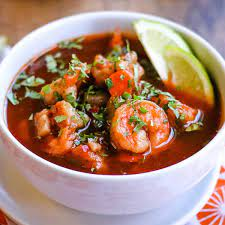

Caldo De Camaron

Description:
The Caldo de Camaron is a delicious traditional mexican
dish that my mother made for many years. It is especially
good during the winter months as the combination of spices and warmth make
for a cozy feel good dish.The recipe shown below is very
simple recipe, which is what makes is great. Anyone can
make this recipe even withought any cooking experience,
which just so happens to be my case.
Ingredients:
- 10 Chilles Pulla
- 3 tomatillos
- 1/2 of a white onion
- 1lb extra large shrimp
- 2 salmon steaks
- Epazote
- salt
- Vegetable oil
- Water
Steps:
-
Add your 10 chilles pulla and 3 tomatillos into a blender
and fill the blender about halfway with water. Blend until smooth.
- Cut up your half onion into medium sized chunks(not too small)
and sautee with oil in a large skillet until golden brown.
- Add contents of blender into skillet. Plus add 1/2 of a blender more of water
into the same skillet.
- Add salt to taste. Add a about 6-7 leaves of Epazote.
Let boil.
- Once mixture is boiling add shrimp and salmon and let cook fully. Serve
- This step is additional, but makes the caldo taste and look
that much better. Chop white onion and cilantro into small
pieces and add to each served plate.
-
If you wish to you can heat up some tortillas or white rice to
accompany the dish. I prefer the former, or it can just be eaten
as is. Enjoy!!